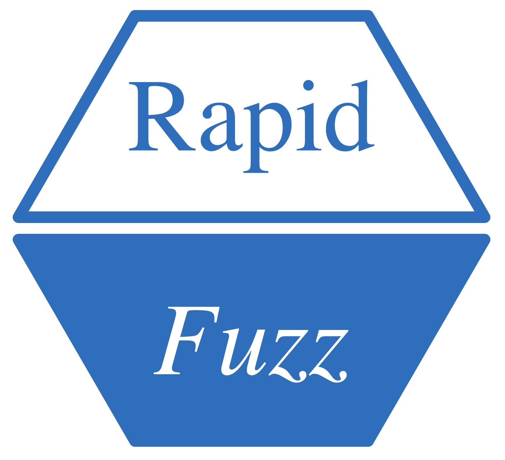

RapidFuzz (pacote R)
Wrapper R (Rcpp) da biblioteca header-only rapidfuzz-cpp, publicado no CRAN. Site em https://strategicprojects.github.io/RapidFuzz/ — GitHub Pages servido de main:/docs (build legacy): reconstruir o pkgdown e dar push já publica.
Como atualizar a lib C++ empacotada
O workflow .github/workflows/check-upstream.yml roda toda segunda 09:00 UTC e abre uma issue quando sai release nova upstream (compara com a versão anotada no Note: do DESCRIPTION — formato source code (vX.Y.Z), não mudar esse formato sem ajustar o workflow).
Passos da atualização (feitos assim na 3.3.3 → 3.3.4, 2026-08-31):
- Baixar o tarball da release e substituir
src/rapidfuzz/inteiro, preservandosrc/rapidfuzz/rapidfuzz_all.hpp(header custom nosso, não existe upstream):rsync -a --delete --exclude rapidfuzz_all.hpp <release>/rapidfuzz/ src/rapidfuzz/ - Atualizar a versão da lib em 4 lugares:
DESCRIPTION(campo Note),R/zzz.R(mensagem de startup),README.Rmd(2 menções) eREADME.md. - Bump de
Version:eDate:no DESCRIPTION + entrada noNEWS.md+cran-comments.md. - Badge “devel version” no README.Rmd/README.md é hardcoded — atualizar junto.
-
R CMD INSTALL --preclean .+ smoke test, depoisR CMD buildeR CMD check --as-cranno tarball. -
pkgdown::build_site()para regenerardocs/.
Armadilhas conhecidas
- A cópia local dos headers pode divergir do tarball da release só em comentários Doxygen (a 3.3.3 empacotada era snapshot do branch dev). Diferenças de comentário são seguras de sobrescrever; conferir com
diff -ruantes. -
.Rbuildignoreprecisa cobrir.github,.DS_StoreeCLAUDE.md— senão vira NOTE no check do CRAN (“hidden files”). - No check local, o NOTE “HTML Tidy antigo” é do ambiente (macOS), não aparece no CRAN.
- Não commitar
.DS_Store(há alguns já modificados no working tree — deixar de fora). - Commits de release ganham
CRAN-SUBMISSIONatualizado pelo devtools — commitar junto.
Estado (2026-08-31)
v1.1.1 (rapidfuzz-cpp v3.3.4) submetida ao CRAN em 2026-08-31, aguardando aceitação. Badges de CRAN status/downloads atualizam sozinhos após aceite; depois do aceite, rodar pkgdown::build_news() para o site mostrar a data de release.